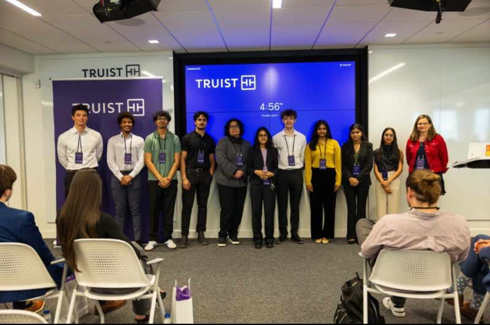
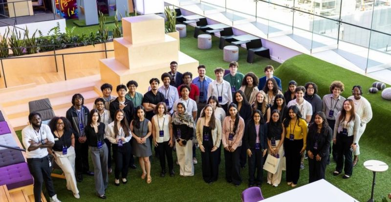

01 / Workflow design
Designing a clearer internal workflow
During Truist’s month-long Immersive Learning Experience, I collaborated with a student team on a confidential business challenge. We used Microsoft’s Power Platform to develop and present a digital workflow concept. I contributed to the automation and reporting components, helped coordinate work across the team, and presented our final recommendation at Truist headquarters.
My contributionWorkflow automation and reporting dashboard
Design focusUsability, collaboration, and visibility

